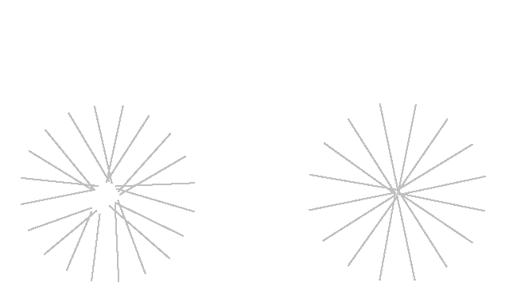
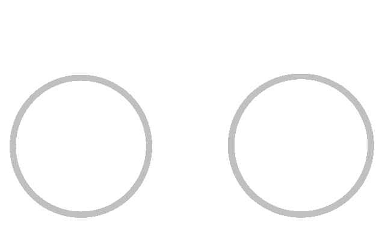
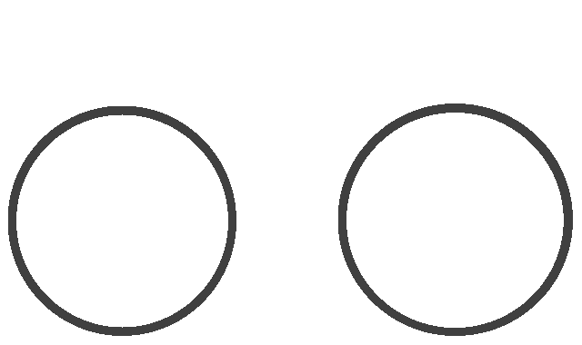
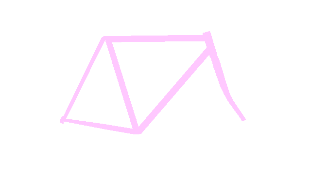
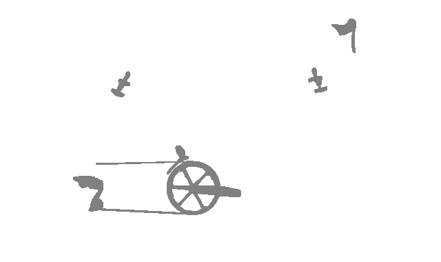

クロモリ2号
予算の関係でクロモリ1号より価格帯を落としたパーツで組み上げた。 懐古趣味的な美しさと、忙しく変速せずゆったり走る言い訳のため、 変速機シフターはWレバーとした。





- フレームはPOS（Panasonic Order System）でサイズとカラーリングを指定。
- リムとスポークがスイス製でタイヤがイタリア製だが、それ以外のパーツは日本製。 日本が誇るモノづくりの力を信じ、安価でも加工精度は落とさないことを期待した。
- Wレバーは絶滅危惧種で選択肢が少なく、結果的に泣く子も黙る（憧れの）Dura-Aceグレードとなった。